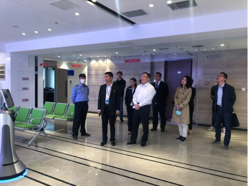
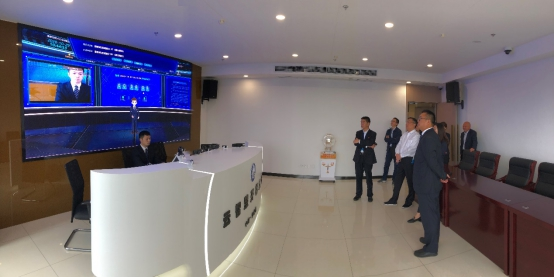

【信息发布时间：2020-11-05阅读次数：】 【我要打印】 【关闭】
10月29日上午，市行政审批局副局长张硕群带队前往市公共资源交易中心张家港分中心调研分中心新址搬迁及业务工作开展情况。调研中，张局长一行实地参观了新办公场地及现场服务管理工作，在云智慧开标大厅观看了不见面开标流程的现场演示。

张局长对张家港分中心的场地标准化配置和信息化建设水平表示了肯定，赞赏张家港分中心在建设过程中以问题为导向，超前谋划，效果显著。双方还围绕“不见面”系统建设，加强交易中心宣传工作，集中采购工作等内容进行了充分沟通交流。张局长表示，只有通过不断的工作积累，融入现代化的电子技术，从全流程、全类别、电子化、智能化入手，才能更好推进“不见面”建设，提升公共资源交易工作水平。

市行政审批局公管处处长谢伟、苏州产权交易中心董事长徐菁等同志陪同调研。